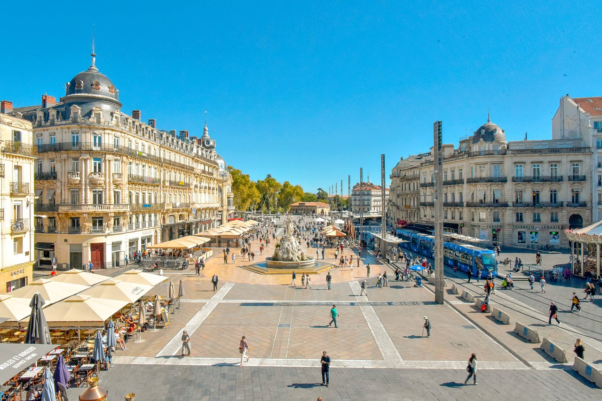

Explorez Montpellier
Vos moyens sociaux-économiques influencent votre accès au bonheur : en savoir plus



La canicule qu'on aime
Tomber malade en vacances c’est la guigne, mais si cela doit vous arriver, choisissez Montpellier. On y étudiait déjà la médecine avant le Moyen-âge : dès le IXe siècle les Maures y établirent des écoles de médecine et la Faculté de médecine de Montpellier existe depuis 1220. Quand le médecin vous aura remis sur pied, rattrapez le temps perdu en visitant toute la ville, la cathédrale, les belles demeures et l’opéra.